real-wood-deck
Wood deck and building facade. Photo source · MDEMEXICO · CC0-1.0


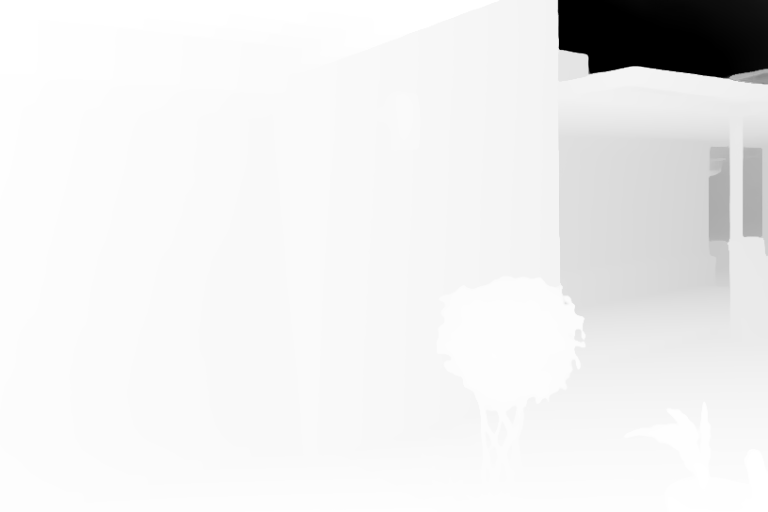
CUDA check: PASS · Point NRMSE: 3.185e-4 (limit 1e-3) · Max absolute point difference: 0.9022
Detail profile. Same preprocessed input and depth scale for both implementations. Depth is brighter nearby, using CUDA's 2nd–98th percentile range. Error: green is zero; red saturates at 1% of that depth range; magenta marks mask disagreement. These are implementation comparisons, not measured scene-depth ground truth.
Wood deck and building facade. Photo source · MDEMEXICO · CC0-1.0

CUDA check: PASS · Point NRMSE: 3.185e-4 (limit 1e-3) · Max absolute point difference: 0.9022
Wood deck and building facade. Photo source · MDEMEXICO · CC0-1.0

CUDA check: FAIL · Point NRMSE: 1.477e-3 (limit 1e-3) · Max absolute point difference: 1.417
Wood deck and building facade. Photo source · MDEMEXICO · CC0-1.0
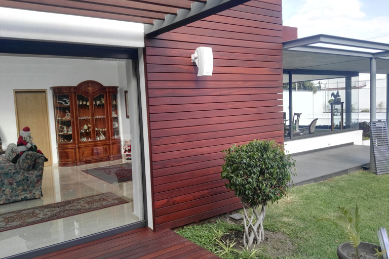
CUDA check: FAIL · Point NRMSE: 1.590e-3 (limit 1e-3) · Max absolute point difference: 1.412
Furnished interior with occlusions. Photo source · Daderot · CC0-1.0

CUDA check: PASS · Point NRMSE: 4.206e-5 (limit 1e-3) · Max absolute point difference: 0.04649
Furnished interior with occlusions. Photo source · Daderot · CC0-1.0
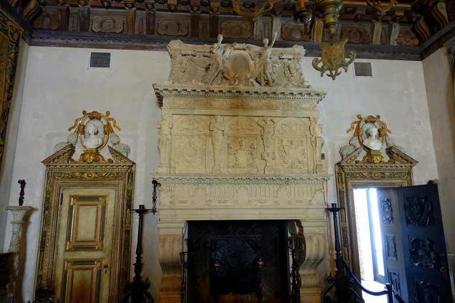
CUDA check: PASS · Point NRMSE: 1.433e-4 (limit 1e-3) · Max absolute point difference: 0.1624
Furnished interior with occlusions. Photo source · Daderot · CC0-1.0

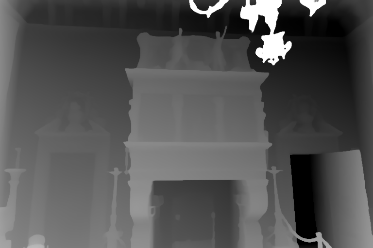
CUDA check: PASS · Point NRMSE: 1.704e-4 (limit 1e-3) · Max absolute point difference: 0.2047
Close-up curved object, smooth surfaces and wood texture. Photo source · Rachel Michetti · CC0-1.0

CUDA check: PASS · Point NRMSE: 1.621e-5 (limit 1e-3) · Max absolute point difference: 0.005871
Close-up curved object, smooth surfaces and wood texture. Photo source · Rachel Michetti · CC0-1.0
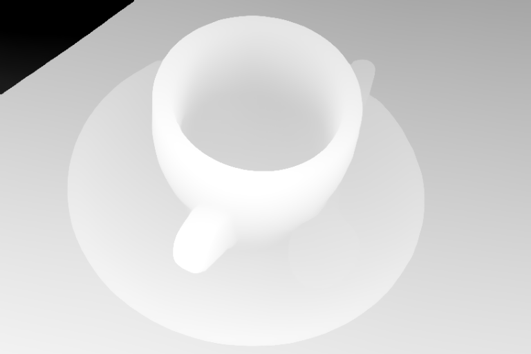
CUDA check: PASS · Point NRMSE: 2.555e-5 (limit 1e-3) · Max absolute point difference: 0.002399
Close-up curved object, smooth surfaces and wood texture. Photo source · Rachel Michetti · CC0-1.0

CUDA check: PASS · Point NRMSE: 4.631e-5 (limit 1e-3) · Max absolute point difference: 0.004296
Portrait, face, hair and foreground occlusions. Photo source · NASA · Public domain
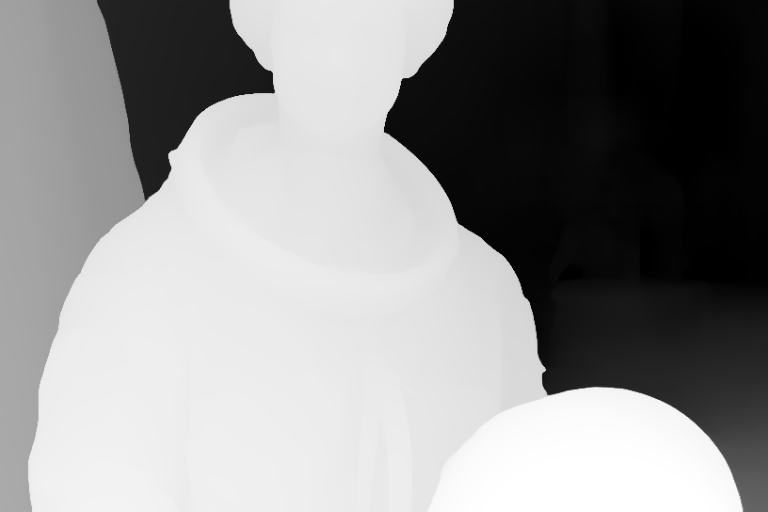
CUDA check: PASS · Point NRMSE: 3.610e-5 (limit 1e-3) · Max absolute point difference: 0.007218
Portrait, face, hair and foreground occlusions. Photo source · NASA · Public domain

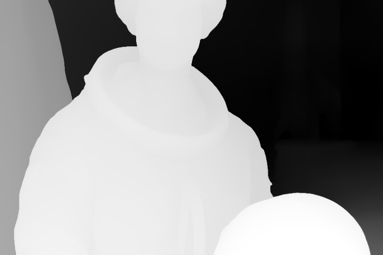
CUDA check: PASS · Point NRMSE: 1.216e-4 (limit 1e-3) · Max absolute point difference: 0.02787
Portrait, face, hair and foreground occlusions. Photo source · NASA · Public domain

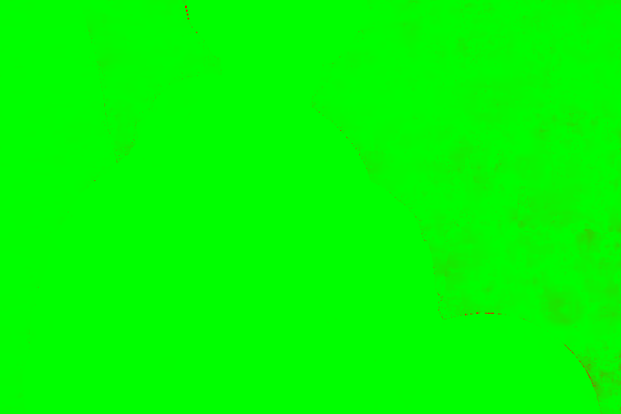
CUDA check: PASS · Point NRMSE: 3.251e-4 (limit 1e-3) · Max absolute point difference: 0.1169
Animal, fur, whiskers and fine edges. Photo source · Stefan van der Walt · CC0-1.0

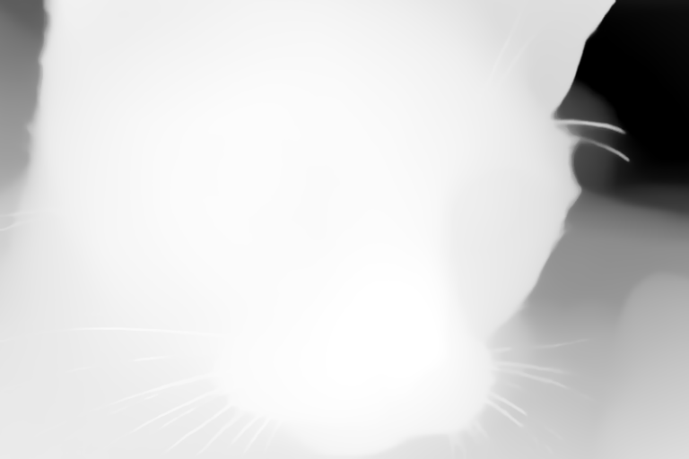
CUDA check: PASS · Point NRMSE: 1.454e-5 (limit 1e-3) · Max absolute point difference: 0.003517
Animal, fur, whiskers and fine edges. Photo source · Stefan van der Walt · CC0-1.0
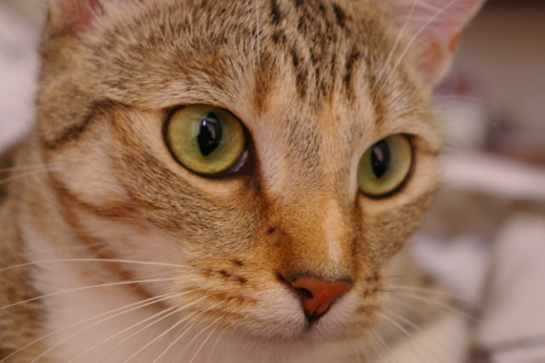
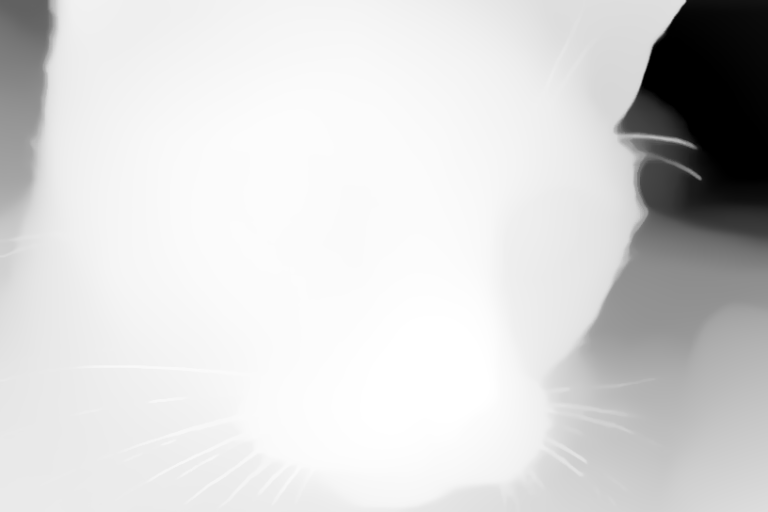
CUDA check: PASS · Point NRMSE: 5.957e-5 (limit 1e-3) · Max absolute point difference: 0.01162
Animal, fur, whiskers and fine edges. Photo source · Stefan van der Walt · CC0-1.0

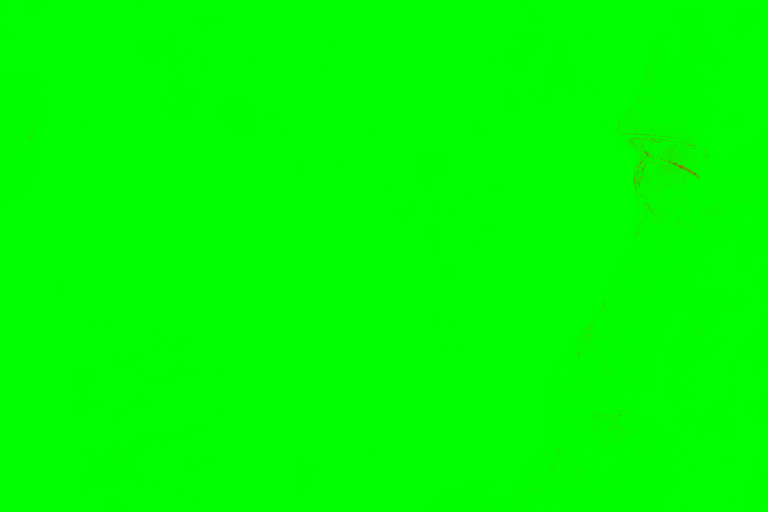
CUDA check: PASS · Point NRMSE: 1.696e-4 (limit 1e-3) · Max absolute point difference: 0.01959
Distant outdoor scene, thin structures, sky and smoke. Photo source · SpaceX · Public domain
CUDA check: PASS · Point NRMSE: 9.366e-6 (limit 1e-3) · Max absolute point difference: 0.04414
Distant outdoor scene, thin structures, sky and smoke. Photo source · SpaceX · Public domain

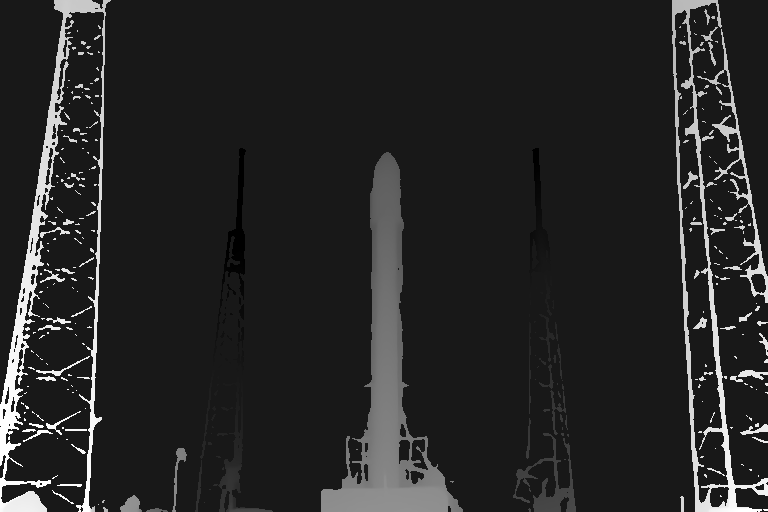
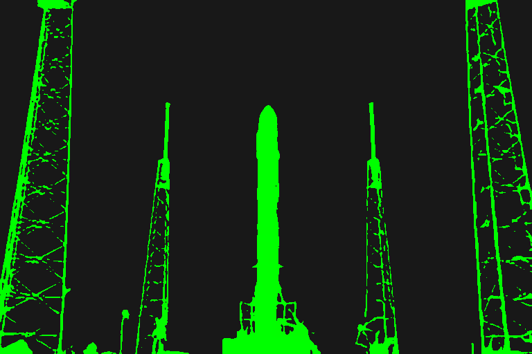
CUDA check: PASS · Point NRMSE: 3.964e-5 (limit 1e-3) · Max absolute point difference: 0.05873
Distant outdoor scene, thin structures, sky and smoke. Photo source · SpaceX · Public domain

CUDA check: PASS · Point NRMSE: 8.549e-5 (limit 1e-3) · Max absolute point difference: 0.1087